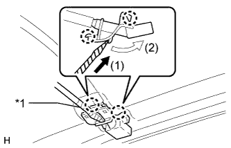
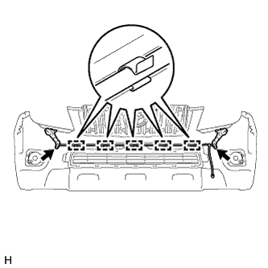
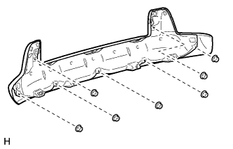

ПЕРЕДНИЙ БАМПЕР > РАЗБОРКА |
| 1. СНИМИТЕ КРОНШТЕЙН ОПОРЫ УДЛИНИТЕЛЯ ПЕРЕДНЕГО БАМПЕРА (для моделей с кронштейном) |
Выверните 2 винта и снимите кронштейн опоры удлинителя переднего бампера.
| 2. СНИМИТЕ ЛЕВЫЙ ПЕРЕДНИЙ СПОЙЛЕР (для моделей с передним спойлером) |
Поверните держатели на 90° и снимите 2 нижних держателя переднего бампера и передний спойлер.
| 3. СНИМИТЕ ПРАВЫЙ ПЕРЕДНИЙ СПОЙЛЕР (для моделей с передним спойлером) |
| 4. СНИМИТЕ ФОРСУНКУ ОМЫВАТЕЛЯ ЛЕВОЙ ФАРЫ ТИПА 1 В СБОРЕ (для моделей с системой очистителей фар) |
|  |
С помощью отвертки освободите 2 захвата и отсоедините форсунку стеклоомывателя в сборе, как показано на рисунке.
| *1 | Защитная клейкая лента |
 |
Отсоедините форсунку омывателя в сборе от шланга омывателя.
| 5. СНИМИТЕ ФОРСУНКУ ОМЫВАТЕЛЯ ПРАВОЙ ФАРЫ ТИПА 1 В СБОРЕ (для моделей с системой очистителей фар) |
| 6. СНИМИТЕ ШЛАНГ ОЧИСТИТЕЛЯ ФАР № 1 (для моделей с системой очистителей фар) |
|  |
Отсоедините шланг очистителя фар № 1 от привода омывателя фар в сборе.
Отсоедините 5 зажимов и снимите шланг с накладки переднего бампера.
| 7. СНИМИТЕ ПРИВОД ОМЫВАТЕЛЯ ЛЕВОЙ ФАРЫ В СБОРЕ (для моделей с системой очистителей фар) |
 |
Выверните болт.
 |
Освободите 2 захвата и снимите привод омывателя фары в сборе.
| 8. СНИМИТЕ ПРИВОД ОМЫВАТЕЛЯ ПРАВОЙ ФАРЫ В СБОРЕ (для моделей с системой очистителей фар) |
| 9. СНИМИТЕ НАКЛАДКУ ЗАЩИТЫ ПЕРЕДНЕГО БАМПЕРА (для моделей с декоративной отделкой) |
Освободите 2 захвата и снимите накладку защиты переднего бампера.
| 10. СНИМИТЕ КРЫШКУ ОСНОВАНИЯ ЗАЩИТЫ ПЕРЕДНЕГО БАМПЕРА (для моделей с декоративной отделкой) |
Выверните 6 болтов и снимите крышку основания защиты переднего бампера.
| 11. СНИМИТЕ КРОНШТЕЙН ЛЕВОЙ ЗАЩИТЫ ПЕРЕДНЕГО БАМПЕРА (для моделей с декоративной отделкой) |
Отверните 2 гайки, выверните 2 болта и снимите кронштейн защиты переднего бампера.
| 12. СНИМИТЕ КРОНШТЕЙН ПРАВОЙ ЗАЩИТЫ ПЕРЕДНЕГО БАМПЕРА (для моделей с декоративной отделкой) |
| 13. СНИМИТЕ ЗАЩИТУ ПЕРЕДНЕГО БАМПЕРА (для моделей с декоративной отделкой) |
|  |
Отверните 7 гаек и снимите защиту переднего бампера.
| 14. СНИМИТЕ ПЛАСТИНУ ЗАЩИТЫ ПЕРЕДНЕГО БАМПЕРА (для моделей с декоративной отделкой) |
Отверните 3 гайки и снимите пластину защиты переднего бампера.
| 15. СНИМИТЕ ЖГУТ ЭЛЕКТРОПРОВОДКИ МОТОРНОГО ОТСЕКА № 2 (для моделей с сенсорной системой помощи при парковке TOYOTA) |
Отсоедините 4 разъема.
Открепите 7 зажимов и снимите жгут электропроводки моторного отсека № 2.

| 16. СНИМИТЕ УЛЬТРАЗВУКОВОЙ ДАТЧИК № 1 (для моделей с сенсорной системой помощи при парковке TOYOTA) |
 |
Отсоедините разъем.
Освободите 2 захвата и снимите ультразвуковой датчик № 1.
| 17. СНИМИТЕ ДЕРЖАТЕЛЬ УЛЬТРАЗВУКОВОГО ДАТЧИКА № 1 (для моделей с сенсорной системой помощи при парковке TOYOTA) |
 |
Освободите 2 захвата и снимите держатель ультразвукового датчика № 2.
| 18. СНИМИТЕ ЛЕВУЮ ПРОТИВОТУМАННУЮ ФАРУ В СБОРЕ (для моделей с противотуманными фарами) |
Выверните винт и снимите противотуманную фару.
| 19. СНИМИТЕ ПРАВУЮ ПРОТИВОТУМАННУЮ ФАРУ В СБОРЕ (для моделей с противотуманными фарами) |
| 20. СНИМИТЕ КРЫШКУ ЛЕВОГО ОТВЕРСТИЯ ПЕРЕДНЕГО БАМПЕРА (для моделей с противотуманными фарами) |
Освободите 4 захвата и снимите крышку отверстия в переднем бампере.
| 21. СНИМИТЕ КРЫШКУ ПРАВОГО ОТВЕРСТИЯ ПЕРЕДНЕГО БАМПЕРА (для моделей с противотуманными фарами) |
| 22. СНИМИТЕ КРЫШКУ ЛЕВОГО ОТВЕРСТИЯ ПЕРЕДНЕГО БАМПЕРА (без противотуманных фар) |
Освободите 4 захвата и снимите крышку отверстия в переднем бампере.
| 23. СНИМИТЕ КРЫШКУ ПРАВОГО ОТВЕРСТИЯ ПЕРЕДНЕГО БАМПЕРА (для моделей без противотуманных фар) |
| 24. СНИМИТЕ НИЖНЮЮ РЕШЕТКУ РАДИАТОРА № 1 |
Выверните винт.
Расцепите 13 захватов и снимите нижнюю решетку радиатора № 1.